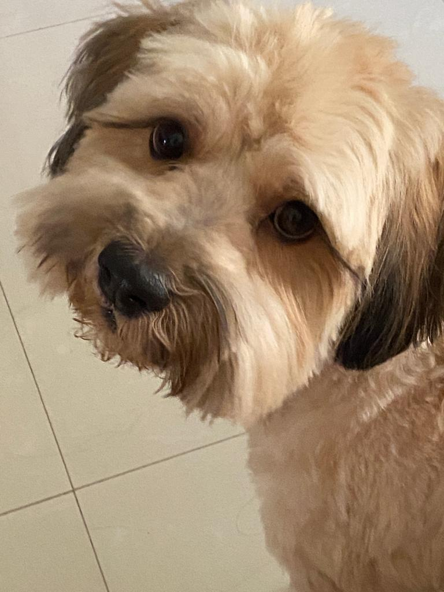

Frank, nuestro CEO
Hoy Frank es el alma de Don Frank Café. Su historia nos recuerda que el amor, la constancia y una segunda oportunidad pueden cambiarlo todo.
Desde las montañas de Chiapas hasta tu taza. Cada sorbo ayuda a cambiar la vida de lomitos rescatados.
Hoy Frank es el alma de Don Frank Café. Su historia nos recuerda que el amor, la constancia y una segunda oportunidad pueden cambiarlo todo.
Frank fue rescatado de la calle cuando más lo necesitaba. Llegó con miedo, pero también con una enorme capacidad de confiar otra vez.
Con cuidado, paciencia y cariño. Frank empezó a transformarse. Cada pequeño avance fue una victoria compartida.
Con el paso del tiempo, Frank se volvió más fuerte y más curioso. Su historia nos enseñó el valor de hacer las cosas con intención.
Frank nos inspiró a crear algo más grande: una marca que combina café de calidad con un compromiso real por ayudar a otros perritos.
Don Frank Café nace para generar impacto. Cada taza apoya el rescate, cuidado y adopción de perritos que, como Frank, merecen una segunda oportunidad.
Lo que queremos es simple:
Darte un café rico en aromas y
sabores mientras cambiamos las vidas de los lomitos
Cada taza está pensada para disfrutarse sin prisas y con intención.
Creemos que los pequeños procesos hacen grandes diferencias.
Cada grano refleja el origen, el cuidado y la historia de quienes lo cultivan.
Don Frank Café honra a Frank, nuestro perrito rescatado. Parte de cada compra apoya a Fundadog y su labor de rescate y adopción.
Cuatro variedades de café de Chiapas, creadas con cuidado artesanal y un propósito que va más allá de una taza.
Un café intenso y profundo, con notas marcadas de cacao oscuro y un final largo y elegante. Ideal para quienes disfrutan sabores fuertes, balanceados y una taza que se siente desde el primer sorbo.
Parte de esta compra apoya a Fundadog. Ver detallesSuave y reconfortante, con notas dulces de miel y maple que se mezclan con un toque cálido a madera. Un café envolvente, perfecto para las mañanas tranquilas o para acompañar una tarde sin prisas.
Parte de esta compra apoya a Fundadog. Ver detallesEquilibrado y aromático, con la profundidad del chocolate y la suavidad natural de la vainilla. Un perfil amable y redondo, pensado para quienes buscan una taza fácil de disfrutar, todos los días.
Parte de esta compra apoya a Fundadog. Ver detallesCálido y cremoso, con notas de chocolate y avellana tostada que aportan cuerpo y dulzor natural. Un café reconfortante, ideal para acompañar momentos de calma y disfrutar lentamente.
Parte de esta compra apoya a Fundadog. Ver detalles